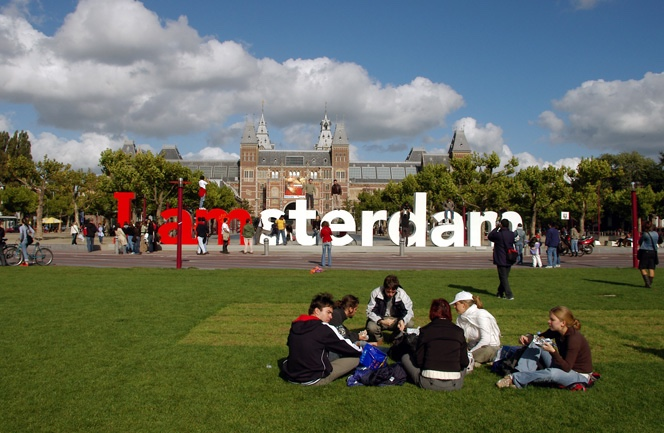
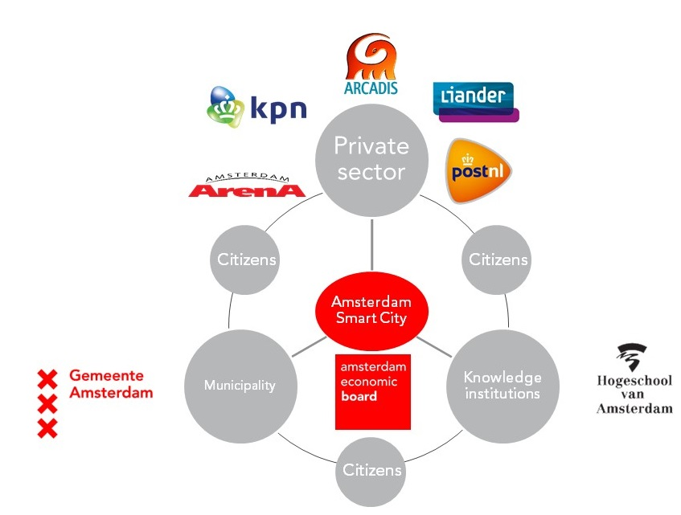
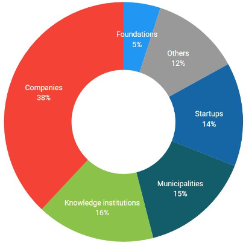
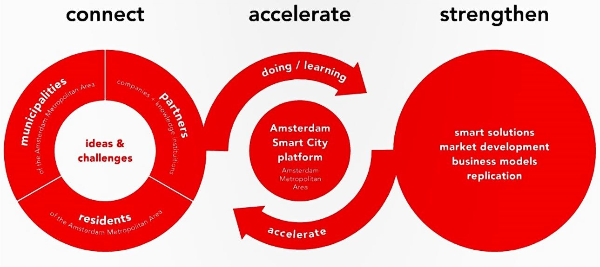
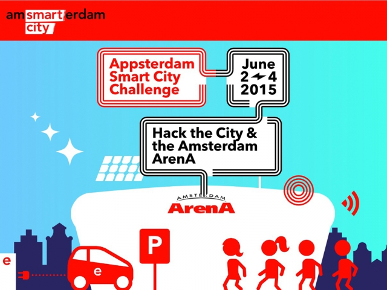

Reference: http://www.tapscape.com/worlds-top-10-smart-cities/
Why does it consider itself smart? Who is driving these efforts, and for what reasons?
Since 2009, Amsterdam has been integrating smart city technology in order to reduce traffic, save energy, and increase safety. So far, 79 smart city projects have been deployed. One of the main goals is to use technology in order to minimize the city’s carbon footprint. More information about Amsterdam's achievements and plans as a smart city can be found here: https://amsterdamsmartcity.com/
Amsterdam Smart City is comprised of government, knowledge institutions, the private sector, and any citizens with a will to participate.
Government: Amsterdam Economic Board, City of Amsterdam
Knowledge Institutions: Hogeschool van Amsterdam (a university)
Private Sector: Arcadis (a design consultancy for natural and built assets), Alliander (an energy network company), KPN (a landline and mobile telecommunications company), Amsterdam Arena (a stadium), PostNL (a mail, parcel, and e-commerce corporation)


Motivations
- "test innovative ideas and solutions for urban issues"
- "contribute to the liveability of the Amsterdam Metropolitan Area"
- "promote sustainable economic growth"
- "help develop new markets"
- "accelerate startup of projects in the city to tackle the challenges our city is facing"
Conceptual Model

Reference: https://amsterdamsmartcity.com/p/about
Categories
Infrastructure and Technology; Energy, Water, and Waste; Mobility; Circular City; Governance and Education; Citizens and Living
Example Projects
Mobypark allows people who own parking spaces to rent them out to others. Data regarding the number of spaces rented out is used to help determine parking demand and traffic flow. The application was developed by a resident of Amsterdam as part of the Amsterdam Smart City Challenge.
Beautiful Noise is an application that uses data produced by tourists and locals in order to send out alerts regarding traffic and lines at museums and other public venues.
Klup is a social app for seniors that aims to decrease feelings of loneliness. It connects seniors based on their interests and location, and seeks to enable them to live a more active lifestyle.
Future Plans
Amsterdam uses “living labs,” communities and neighborhoods where smart city projects can be tested in a smaller scale environment, to continue the development of projects before potentially deploying them on a larger scale. Much of the testing in these living labs is focused on projects related to energy consumption.
To what extent and in what ways were residents involved in the development of the smart city?
Amsterdam claims to have a participatory bottom up approach to smart city planning. The Amsterdam Institute for Advanced Metropolitan Solutions “help[s] develop urban solutions through collaborations among academic and research institutions, enterprise, municipalities, and, crucially, local residents.” Futhermore, Amsterdam holds a yearly Smart City Challenge, which enables residents to propose smart city applications that may later be actualized. There is also a Requests page on Amsterdam’s smart city website where people can pitch ideas and ask questions. In this way, Amsterdam seeks to ensure smart city planning that is socially inclusive, rooted in community grassroots initiatives and resident participation.
This said, questions can certainly be raised regarding how “participatory” Amsterdam’s approach actually is. In order to book a visit to Amsterdam’s “Experience Lab” (where visitors can watch a presentation introducing them to Amsterdam’s smart city projects as well as get the opportunity to experience some of these projects), it costs a 500-1200 Euros. This is clearly out of the price range of a large population of people. Also, the Smart City Challenge is very much marketed towards hackers, excluding those who do not have these skills. Finally, while Amsterdam does invite all residents to contribute ideas to the Requests page of their smart city website, the invitation itself seems to be more specifically targeted at “innovators.” It’s unclear whether ordinary residents have the power to decide which ideas progress and which don’t. Lastly, those who don’t have internet access may not be able to have any voice at all.

Reference: https://waag.org/en/event/hack-city
Challenges
Despite the introduction of all this technology to Amsterdam, the rapid change that such technology could afford has yet to come. In some ways, this can be traced back to the fact that much of the data is very unstructured and difficult to work with.
Also, as Annelies van der Stoep (Amsterdam Smart City project manager) remarked, “One of the main challenges right now is the ‘balance’ in the city -- the balance between the many visitors enjoying our inner city and the residents, the balance between economic growth and sustainability.” This highlights the fact that smart city planning to some extent may revolve around conflicting priorities. It is unclear which priorities Amsterdam values most.
Reflection
What suprised me about Amsterdam's smart city projects is how some of them do seem to actually focus on populations that typically are excluded from smart city developments. For instance, there was one project on designing robots for the homes of the elderly (a population that often is forgot about or not viewed as a legitimate population to design for). Also, within the description for one project, Sharing Economy, I found this: "The College welcomes the disruptive nature of the sharing economy wherever this strengthens the city and can benefit its inhabitants. At the same time, the College is aware of excesses that can negatively impact the city, for example if they lead to an unequal playing field or a lack of social security." This seems to at least demonstrate some awareness of the fact that not all projects will actually serve all people in the city, and some may even be detrimental to certain populations).
I would have liked to have found more regarding the actual impact that any of Amsterdam's smart city projects have had on people's lives/experiences, but I couldn't find anything on this. Most articles seem to simply praise Amsterdam for involving people in the development of it as a smart city. They draw contrast between Amsterdam and cities with a top-down approach to smart city planning, and then ultimately highlight how great of an approach Amsterdam has taken. I haven't been able to find any critical perspectives on Amsterdam.
References
https://amsterdamsmartcity.com/
http://kernelmag.dailydot.com/issue-sections/features-issue-sections/11313/amsterdam-smart-city/#sthash.zjfLdRdB.dpuf
http://sloanreview.mit.edu/article/six-lessons-from-amsterdams-smart-city-initiative/
https://www.researchgate.net/profile/Sotiris_Zygiaris/publication/257796303_Smart_City_Reference_Model
http://sloanreview.mit.edu/article/six-lessons-from-amsterdams-smart-city-initiative/
http://kernelmag.dailydot.com/issue-sections/features-issue-sections/11313/amsterdam-smart-city/